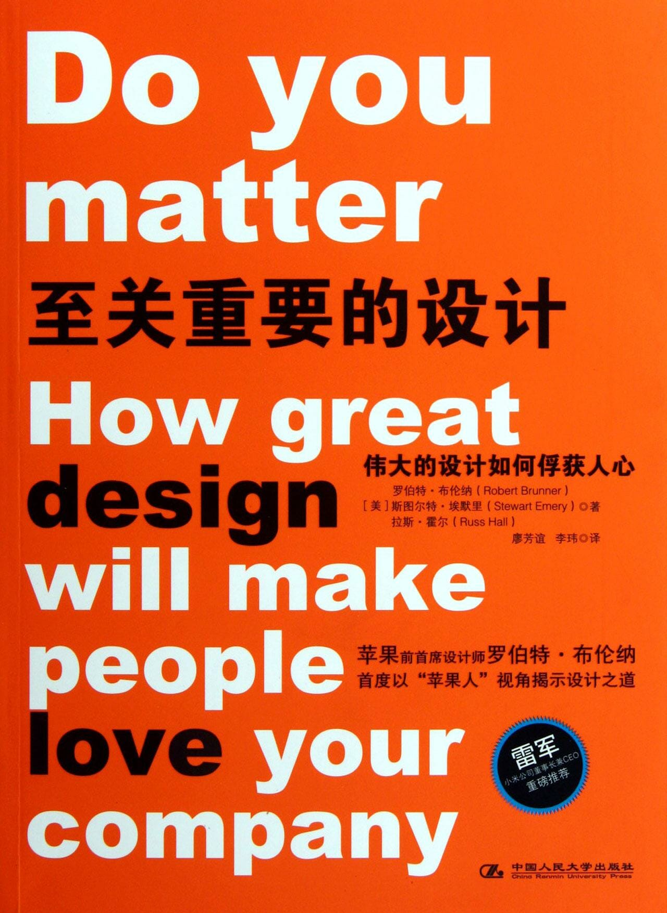

注：【】部分为笔者心得，非原文摘抄。
- 要善于运用设计，为顾客提供一种非凡而精彩的体验。
- 【用户不一定说得出自己想要的是什么，但通常都说得出自己不想要的是什么。】
- 创造一种能唤起大众共鸣的体验。
- 墨守成规让产品毫无生命力或灵魂可言。
- 设计须比实体外观领先一步。好设计与优秀的产品之间存在着巨大差别。
- 你可以创造一项好的设计，制作一个不错的实物，但这并不意味着它将成为一个优秀的产品或一桩好买卖。
- 伟大的产品会体现出一种大众能理解和感知的理念，这种理念能够在大众心目中成长，从情感上与之契合。
- 除非你拥有一个强大的理念，能够覆盖它的外观展示、操作、功能，以及它与大众沟通的方式、它的品牌定位和品牌效应。只有当以上提及的各方面全部具备且相辅相成时，才能形成一款优秀的产品，从而成就一番好事业。
- 完整的设计应该包含顾客对公司的所有体验：亲眼所见，交流所感，以及接触所得，这些会逐步形成观念并激发出想拥有产品的欲望。
- 将产品设计看做一个整体概念，包括产品如何操作，给顾客的印象如何，以及给顾客的感受如何。
- 设计并不仅限于制造带有各种按钮的产品，而是涵盖了设计理应包含的方方面面：大众与产品之间的所有互动。
- 产品既创造（或毁灭）了大众与公司之间的关系，也决定了他们是否会关注某家公司。
- 除非真正掌握设计的概念，否则只有死路一条。
- 当产品被呈现出来时，你的顾客并不关心过程只关心结果，但对你而言，每个细节的部署和落实都很重要。
- 除非总体设计正确，否则再完美的加工也毫无用处。
- 优秀的产品源于创意，它们并非只是一个实物。
- 设计人人有责。做出优秀的设计不仅仅是靠优秀的设计师就能满足，它需要公司中的每个人都做出努力，自始至终，从头至尾。
- 管理整个客户体验供应链。
- 不妨想得远一些，将设计定义为有意识地仔细经营你与顾客之间的互动点。
- 【像日本人那样，用爱去设计产品。】
- 你不会愿意与其他人定义你自己，如果你的在行，你可以自己定义自己。
- 你的产品、服务或品牌是否已经与顾客建立起一种情感联系，顾客会不会对你的存在或蓬勃发展有兴趣？
- 如果你的客户希望你能取胜，这就意味着对于他们而言，你已经重要到可以让他们为了你能够一直成功而持续投入情感了。
- 运用设计去管理客户体验供应链是使你真正变得重要的方式。
- 真正的好设计对于使用者来说就像空气一样，因为它“确实有用”。
- 精良的设计是为客户定义并维持良好体验的连接机制，能否意识到这一点对于企业的未来至关重要。
- 【优秀的设计可以帮助企业节省产品的推广成本。】
- 只有你与客户的生活梦想发生联系时，客户才会在乎你。
- 【把产品设计得用户感觉上辈子就会用似的。】
- 在进行伟大的设计之前，你必须解决可行性问题。可行性也必须令人满意。
- 仅仅拥有某种联系是一回事，保证这是一种积极有效的联系并维持下去则是另外一回事。
- 作为一个整体设计的组织原则，将重点放在与客户建立深入联系上已变得越来越重要。
- 创建客户体验供应链的过程并非来自固定的草图，因为其中会存在暗礁和障碍。
- 细节决定一流感受。
- 特意将伟大的设计做诶核心战略因素，去创造一种体验，并从中赢得你的好运。
- 不要以牺牲体验来壮大公司；而是以体验的质量促进增长。
- 不要只是参与游戏，而要改变游戏规则。
- 设计，是一个充满活力的持续过程。必须从错误中学习，不断更新，敢于承担新的风险。
- 一个与客户没有面对面互动的公司更难体会客户的情感体验。
- 许多核心产品是技术或服务的公司，当它们被客户的见闻、体验和价值所塑造或引领时，这便是个以设计为导向的公司。
- 大众有时为了获得某种正面的情感体验，他们愿意多花点钱。
- 当人们愿意花更多的前获得你为他们设计的体验，并与之产生联系，而且觉得物有所值时，这便是你的竞争对手唯一不能即刻复制的东西。
- 如果公司真的希望继续生存下去，它们就必须要浏览一定数量的博客、网站或销售平台，了解最直接的反馈，促进公司改善设计。
- 设计一种独特且价值含量高的客户体验，是真正唯一的防御策略。
- 如果还没把对细节的高度关注纳入设计，你就要将其商业化，这是不可能在商业化大战中成为赢家的。
- 当你的公司坚持并关注设计和设计对体验的影像时，你才能在人们心目中建立一种关于“你是谁”和“你对他有多重要”的资产储备。这非常有价值。
- 如果一家公司一直致力于建立以设计为导向的文化，那么偶尔失败一次，客户是会谅解的。
- 【好的产品有这样一个度，当产品的好得超过了这个度，即使偶尔出现一些不尽如人意的地方，用户也不会太在意，而且不好的影响也不会传播太远太久；但是产品没有好得超过这个度，出现同样的问题，用户就会很介意，而且不好的影响会传播的比较久远。】
- 【用户体验其实是很主观的，正如“一千个人心里有一千个哈姆雷特”，但这一千个“哈姆雷特”一定存在一些共性，把共性部分的设计发挥到极致。】
- 形成设计意识的第一步就是要认识到，竞争者能够轻而易举抄袭的是哪一部分，而难以轻易复制的真正标志性体验又是哪一部分。
- 没有关注、谨慎和新鲜感，企业是不能保持其标志性特质的。
- 企业必须坚持不懈地关注客户体验供应链，努力成为一个以设计为导向的公司，这必须从公司上层开始并向下渗透至公司运作的方方面面。
- 没有持续性决策领导力的公司不能成为以设计为导向的公司。
- 苹果公司以设计为导向的体验特色：1，来自公司最上层的动力；2，关注以设计为导向；3，以不同的方式思考；4，对样品和市场做出快速反应。
- 情感因素不能因为成本原因而随意删减。
- 设计必须融入加工的每一个过程，当然了，也要渗透到销售和市场营销之中。
- 伟大的设计人人有责，它不只是设计师的事情。
- 设计是一个整体概念。
- 你必须管理整个过程中所有组成部分和利益相关者之间的关系。
- 如果你不能成为杰出的典范，那么你便成为他人的反面教材。
- 你可能会成功一次，但除非你做出本质的转变，否则你将重蹈覆辙。
- 要成为一个名副其实的，以设计为导向的公司，你必须愿意重新策划制造产品的方式。
- 你真正要做的是走出去，了解大家正在做什么，如何做，同时大家的生活中会发生什么事，他们关心的是什么，面临的问题又是什么。
- 大多数顾客很难一语道破他们的设计取向。通过监督、倾听和观察，你会做得更好。
- 以设计为导向，先期投入的成本确实比较昂贵，因为这是在交学费，需要投入时间和金钱，去做未曾做过的事情。
- 你必须围绕最终用户的所观所感所体验，来设计你的工艺和基础设施，并在之后不断推广，确保你的系统为这一切提供支持。
- 客户不在乎你的供应链，不在乎你有多精益求精，或者你多有手段，顾客只在乎他们想要的。
- 至关重要的是个人内心的感受。
- 要关注自己的设计重点，不要在意那些外部因素。
- 大众对你品牌的看法和感受才是至关重要的，而你并不能对此加以控制。
- 品牌即是公司性格的体现。
- 与顾客推心置腹地沟通。
- 你的品牌在顾客心中，你只能去影响它。
- 对你而言，最为困难的事情，莫过于从别人的角度去看待自己，对于公司而言也是如此。
- 对于很多大公司而言，非常典型的案例是他们能感觉到自己已陷入困境，却不知道原因何在。
- 一款新产品的劲敌之一，是与惰性和成见展开的艰难斗争这正是阻碍它与客户建立联系的艰难斗争。
- 公司要做的事情不只是为开发一款产品的特殊需求而烦恼，更要时刻了解自己正在做些什么，以及自己的公众形象怎样。
- 你需要有某些观念上的飞跃：要么开发出消费者敏锐的本能；要么聘请人才，以便帮助开发一种文化。
- 公司越大，就越难保证事事都能照计划进行。
- 你的生死取决于客户体验的好恶，一旦他们拿起武器发起猛攻，你所有的产品都不能幸免。
- 对于一个以设计为导向的公司来说，了解体验的重要性，并将此铭记于心，对经营至关重要。
- 要不断去重新认识、应用和体验客户的世界，否则好产品也将会降级。对于一个企业而言，这是一个永恒的生存之道。
- 用事实“展示”产品胜于用言语“告诉”顾客。
- 通过研究发现新领域。
- 你必须坚守阵地，悉心对待你的客户群，以恢复他们对每款设计的信任感。
- 如果一款产品仓促进入市场而引发了无法挽回的问题，这会导致整个品牌一落千丈。
- 你必须将客户体验供应链融入企业文化的每一部分，你必须给予大众相应的评估与回报。
- 许多曾一度让某家公司成功的因素在后来很可能变成阻碍它向前发展的根源。
- 你需要清楚地定义你的客户体验，定义设计语言和其它一切，随后让各个合作伙伴及厂商遵从这一原则，紧扣目标进行工作。
- 功能不只是形式的一部分。
- 全新的创新方式同样拥有市场。
- 设计沟通作为产品策略中的一部分，必须涵盖在管理客户体验供应链的过程中。
- 你不能取悦所有人，而且最好不要尝试这么做。
- 每一个要素都必须诚实大胆，并能融合在一起，让人感到激动不已。
- 尽管几乎每样产品或服务，都能体现一种设计语言，但不一定总是行之有效。
- 就像任何优秀品牌一样，相关信息有其关注的焦点，也由此吸引了更为广泛的客户群，因为这代表着一种期望。
- 在一个以设计为导向的公司，设计不会被本末倒置，设计体现在方方面面。
- 保持一致并不总是正确。
- 只考虑竞争对手会让你远离被关注的焦点。
- 市场和趋势瞬息万变，你必须要适应，但仍需坚持你的核心价值。
- 从操作的角度看，协调是件好事，但是却可能带来妥协。
- 不合时宜地节省些许金钱和时间很有可能将你置于死地。
- 设计不是陈述，而是正在进行的对话。
- 强调那些让你的公司至关重要的特征。
- 将顾客所想融入设计之中。
- 假如“伟大的设计”仅独居于研究中，那它绝对算不上是伟大的设计。
- 设计一款标志性产品，能给你整个产品系列带来一种光环效应，并将提高你所有产品的效益。
- 最好的办法就是保持本色，只将潮流看做背景，让产品保持适应性与可扩展性。
- 如果关注学习的方法，而不是成功的方法，将受益匪浅。
- 每个人如何思考、表现，以及如何获得回报，这便是你的整体机制文化，必须依次纳入预定客户体验的设计中，这是工作中的客户体验供应链管理。
- 实现设计策略，并始终保持实至名归。
- 你必须要耗费一些精力对付竞争对手，但不要花费太多心思去考虑敌人身在何处。
- 【以抄袭为生的竞争对手是令人极其厌恶的，适当的时机，可考虑用“星球大战计划”的方式使其自行崩溃。】
- 谨慎，是在“向前看”的同时，也了解你身边发生的事情。
- 为了获得更加体验，顾客愿意多花一些钱。实际上，或许这是他们唯一愿意花费更多金钱获得的东西。
- 要想成就伟大的设计，由始至终，你都必须舍得在用户体验供应链上做出投资。
- 研究的目标，不应只是单纯地列举公众意见，其目标在于与设计联系在一起。
- 我们需要面对的挑战是，真正优异且具有创新性的设计总是能打破陈规，而大多数普通民众在面对新事物时，总有些摸不着头脑。
- 尽管人们所作的第一反应往往都是负面反映，但如果正面用户评价越来越多，顾客就会将产品视为同类产品中的最佳之选，产品从此供不应求。
- 想要建立一个成功品牌，就必须拥有自己的关注点，并不需要取悦每个人。
- 如果你想不断进步，就必须接受失败。
- 在设计中，风险并不只是个单纯的字眼，你必须抓住契机，将产品推向四面八方。
- 你必须按部就班，必须在设计过程中花费一定的时间进行研究和开发，此外你别无他选。
- 在商业领域，重复并不意味着自我模仿。为了遵循以设计为导向，必须采取更为夸张而激进的手段，换言之，就是采用不同的方式，将同样的事情再做一遍。
- 如果你建立一种以设计为导向的文化，设计过程就会进展神速。
- 完整的创意和不断推陈出新的产品让公司与“跟风”的竞争对手拉开距离，并保持创意永不落伍，不断向前发展。
- 设计新颖的产品，可以满足某种体验需求，或未知的需求。
- 大众在寻求一种富有生命力的美妙体验。
- 人类的所作所为，都以一种希望从生活中获得更好体验的期盼为基础。
- 一个普遍存在的矛盾：在商业领域，我们大多数人已经习惯于回避与情感相关的事情。